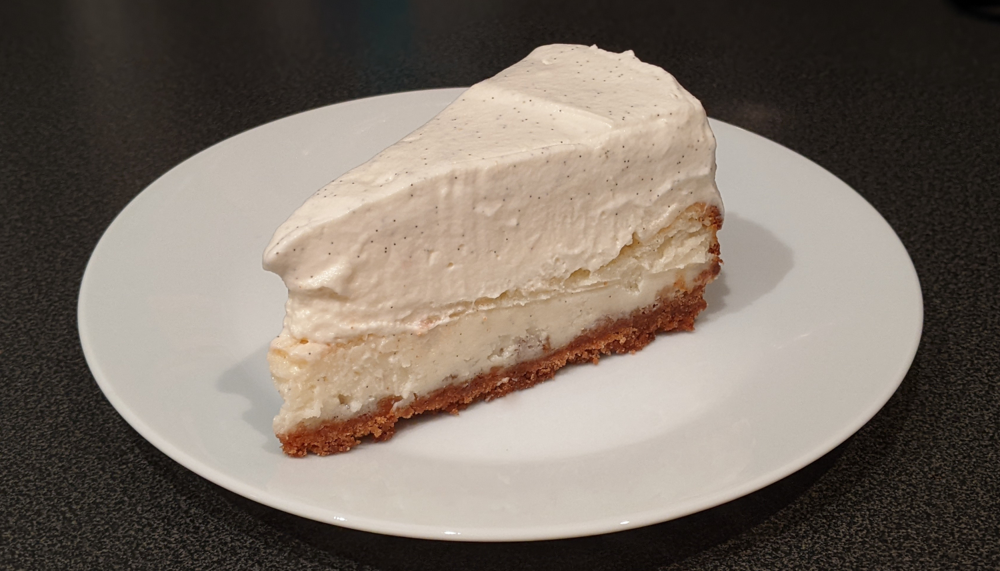

Vanilla Bean Cheesecake

Author: Mel's Kitchen Cafe |
Cooked: July 23, 2022
Yields: 12 Servings | Prep Time: 30 Minutes | Cook Time: 40 Minutes
Ingredients
- 1 1/2 c. crushed graham crackers (~12 sheets)
- 1/4 c. sugar
- 1 egg yolk
- 1/4 tsp vanilla extract
- 6 Tbs butter, melted --------------------------
- 16 oz cream cheese, softened (2 blocks)
- 1 c. sour cream (1 small container)
- 2 Tbs cornstarch
- 1 c. sugar
- 1/2 tsp vanilla extract
- Vanilla bean seeds from one pod --------------------------
- 1 c. heavy whipping cream
- 1/4 tsp vanilla extract
- 2 Tbs powdered sugar
- 4 oz cream cheese, softened (1/2 block)
- 4 oz white chocolate baking squares (1 bar) --------------------------
- 1 c. heavy whipping cream
- 1 Tbs powdered sugar
- Vanilla bean seeds from one pod
Crust
Cheesecake
White Chocolate Mousse
Whipped Cream
Directions
- Preheat oven to 375°F. Crush graham crackers in a food processor or sandwich bag with rolling pin and add to a medium bowl with sugar. Add the egg yolk, vanilla, and melted butter and mix until combined and uniform. Add and press into to the bottom of a springform pan. Bake for 6 minutes and allow to cool completely.
- Using a mixer, beat the cream cheese until soft and creamy. Add sour cream, cornstarch, sugar, and vanilla and beat until smooth. Be sure to scrape down the sides and the bottom of the bowl to make sure that it mixes uniformly. Once smooth, add vanilla bean seeds and mix until uniform. Add this mixture to the graham cracker crust and smooth out.
- Reduce oven temperature to 350°F and back for ~35 minutes, until the edges are set but the center still jiggles slightly. Remove from the oven and let cool completely.
- While the cheesecake cooks, clean the mixing bowl! We will need this again.
- Using the mixer, whisk up the cream and vanilla extract until soft peaks form. Add the powdered sugar and mix until slightly stiffer peaks.
- In another bowl, use a hand mixer or the stand mixer to beat 4 oz of cream cheese until fluffy.
- We will now melt our white chocolate using a double boiler. Find a metal or glass bowl which fits into a pot while leaving a 1-2" gap to the bottom. Add some water to the pot and put over heat and add the bowl over this water. Break the chocolate into small pieces and add to the bowl mixing until melted. Be sure that the water is not so hot that it boils or else the chocolate could burn.
- Add the melted chocolate to the whipped cream cheese and mix until smooth. Then fold in the whipped cream until combined being careful not to overmix.
- Spread the mousse over the cooled cheesecake.
- Use our mixer one last time to make some more whipped cream. Beat the remaining heavy whipping cream and powdered sugar until soft peaks form. Add the vanilla bean seeds and mix until slightly stiffer peaks.
- Spread this whipped cream carefully over the mousse and refrigerate for at least 2 hours before serving.
Additional Notes
- Room temperature cream cheese is key here to avoid lumps.
- When getting ready to make the whipped cream, add the mixing bowl to the freezer in addition to the mixer's whisk attachment. A cold bowl and whisk will help the whipped cream to set.
- A lot of things are getting mixed here. I think the optimal order would be to make the cheesecake mixture and add the cheesecake to the oven. Right after, scrape the bowl out with a rubber scraper and whip up the 4 oz of cream cheese for the mousse. Scrape this out into a separate bowl and set aside. Clean the mixing bowl, dry it out, and add it to the freezer. Then it will be ready for the whipped cream for both the mousse and topper.